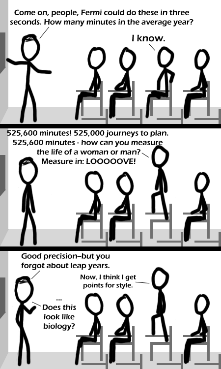

Comic JK 365
When I Feel Like It
⇤
<
?
>
⇥

⇤
<
?
>
⇥
Forum
.
RSS
.
Digg
.
Facebook
.
Reddit
.
Twitter
.
Stumbleupon
Enter your thoughts on number 365 here. Please, no spamming, trolling, or phreaking. "Does this look like biology"-XD 365.25 approx days when you factor in a leap year which leads to 525960 minutes. However, there is just slightly more time by a couple seconds than 29/2 allows for though iirc. >365.24 not .25 >>Exactly 365.2425 to be more precise >>>What are you, Pope Gregory? >>>>Yes... How did you know? 525,949.2 which is 0.06% short. > It's wobbly. One cannot specify the exact length of "a" year to precision on the level of seconds or lower. > An AVERAGE year. An average of how many years? Thank you for acknowledging that biology has style. >Points for bullshit >>Yeah, biology "just" has style. is it just my imagination... or does the lecturer bear a striking resemblance to the young Richard Feynman ? >you mean he’s a stick figure? >>Yeah, later in life he put on a lot of weight. >>But I still see similarities in the nose >>>You might want to book an appointment with a biology major doctor. (just kidding) >>>It's a very stylish nose. well, actually I meant the general demeanour... and the hair... but that lecturer just reminds me of the young Richard Feynman... Lol, my choir sung this song in middle school! >Isn't it about AIDS? >>there's little as embarassing as discovering a favouite song is actually about some completely different subject... I honestly thought "Golden Brown" by The Stranglers was a song about a dusky maiden in a distant land... oh dear... :|